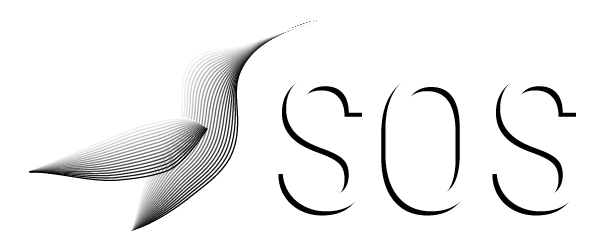

<div [ngClass]="isOpen === true ? 'responsive' : 'topnav'" class="topnav bgHardBlue" id="myTopnav">
    <a routerLink="/homeVisitor" class="logo cursorPointer">
        </a>
    <span class="linkMenu">
        <a *ngFor="let elt of leftMenu"
           routerLink="/{{elt.router}}"
           class="linkTxt category robotoLight">{{elt.name}}</a>
    </span>
    <span class="logMenu">
        <a *ngFor="let elt of rightMenu"
           routerLink="/{{elt.router}}"
           class="linkTxt category robotoLight logMenu">{{elt.name}}</a>
    </span>
    <a class="icon" (click)="switchIsOpen();">
        <i class="hamburger">
            <span *ngFor="let e of [].constructor(3)"></span>
        </i>
    </a>
</div>
